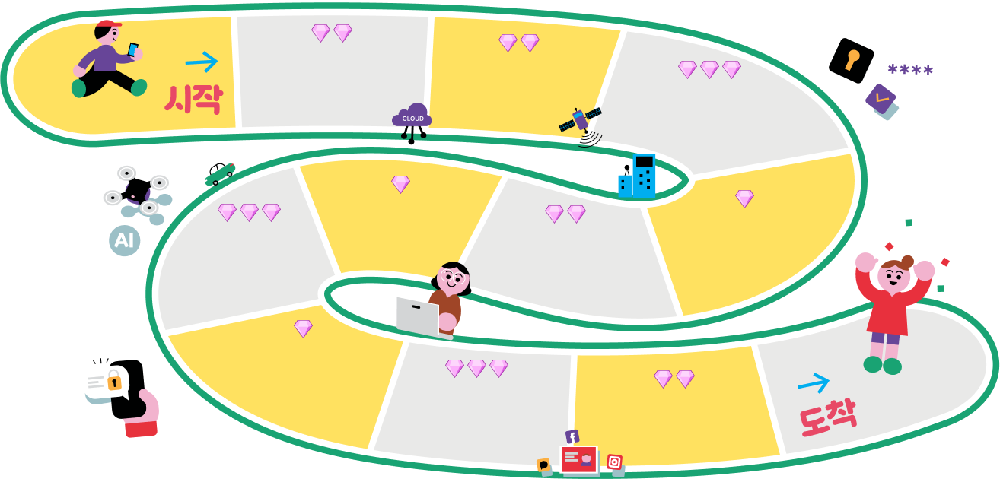

보석 모으기 게임

- 시작
- 도착
- OOO OO은 기존의 전통적인 방식을 디지털 기술을 활용하여 새롭게 바꾸는 것을 의미한다.
- 디지털 기술이 주는 긍정적인 영향 한 가지를 선택하세요.
-
OOO OOO를 활용하면 전력 사용량을 예측하고 수요를 조절하여 전력 공급의 안전성과 에너지 효율성을 높일 수
있다.
- 외부 침입으로부터 정보를 보호하는 직업은
빅데이터 분석가이다.
-
OOO는 모바일 결제, 송금, 개인 자산 관리, 크라우드펀딩 등 정보 기술을 기반으로 한 금융 서비스를 말한다.
- 진로 설계와
관련된 웹사이트 한 가지를 선택하세요.
- OO OO는 살아 있는 개인에 관한 정보로서, 직접·간접 식별
정보가 있다.
- 정보를 안전하게 보호 하기 위해 공용 컴퓨터를 이용한 후에는 반드시 로그아웃을 해야 한다.
-
정보 보안에 실패했을 때, 발생할 수 있는
사이버 공격 피해 사례
한 가지를 선택하세요.
-
OO OOO는 제공받은 정보를 목적에 맞게
사용한 후에 삭제해야 한다.
1 / 10
2
OOO OO은 기존의 전통적인 방식을 디지털 기술을 활용하여 새롭게 바꾸는 것을 의미한다.
보석함: 0